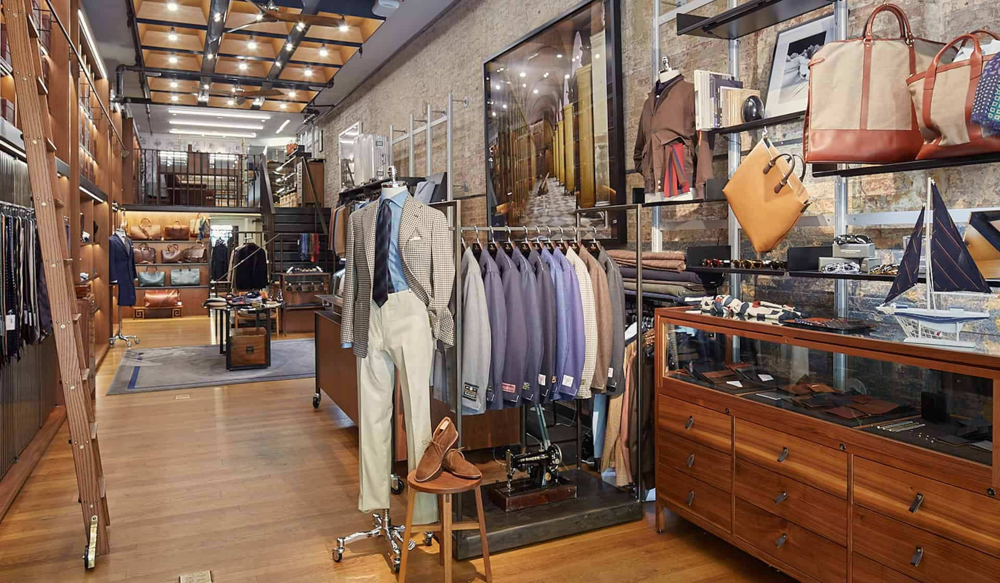

Menswear is a broad category of fashion encompassing all clothing styles for men, ranging from everyday casual wear and streetwear to tailored formal suits,
traditional attire, and activewear. Historically focused on strict sartorial rules, modern menswear emphasizes personal expression, quality fabrics,
and versatile proportions.
- Categories: Broadly divided into formal wear (suits, blazers, dress shirts),
business casual (chinos, polo shirts, sweaters), and casual streetwear (t-shirts, jeans, hoodies).
- Indian Traditional & Fusion: There is a booming market for ethnic wear like kurtas, Nehru jackets, and Indo-western sets.
Leading designers like Kunal Rawal and labels like Tasva are combining historical heritage with modern silhouettes.
- Fit & Tailoring: The fit is considered the most crucial element in men's fashion, with well-tailored garments flattering your specific body proportions.
- Colors & Fabrics: High-quality natural materials like cotton, wool, and linen are staples. Versatile foundational colors
include navy, charcoal, and black for trousers, combined with white or light blue for shirts.

Important
Guidelines for opening and closing the store, including staff preparation and security checks.Procedures for setting up cash registers, processing sales transactions, handling refunds and exchanges.